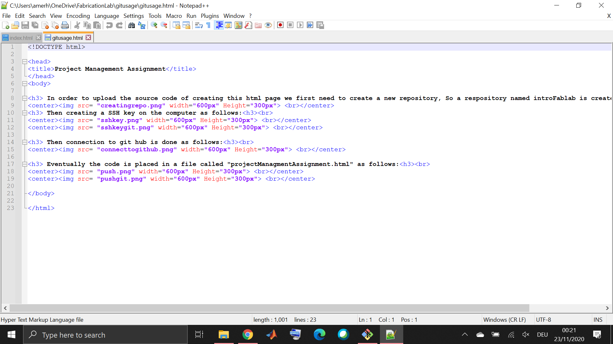
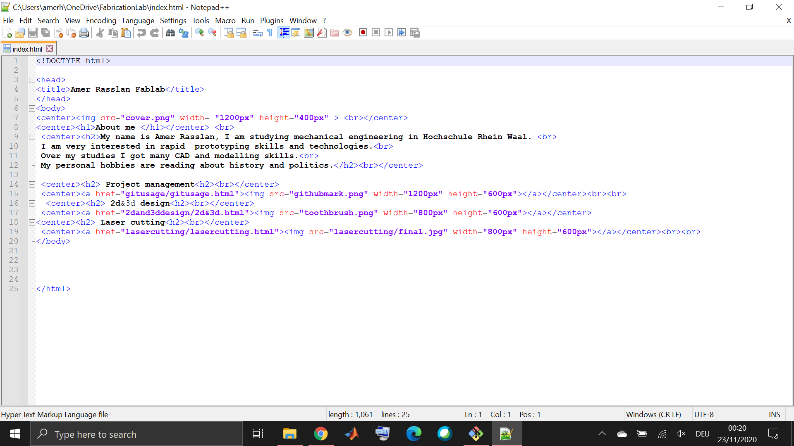
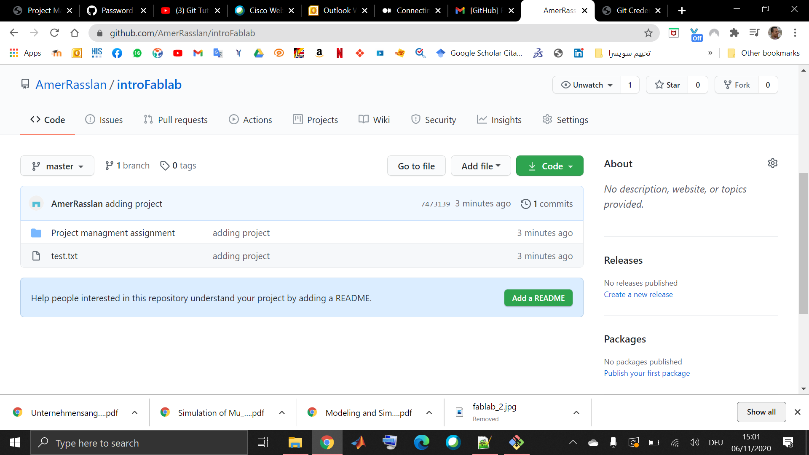
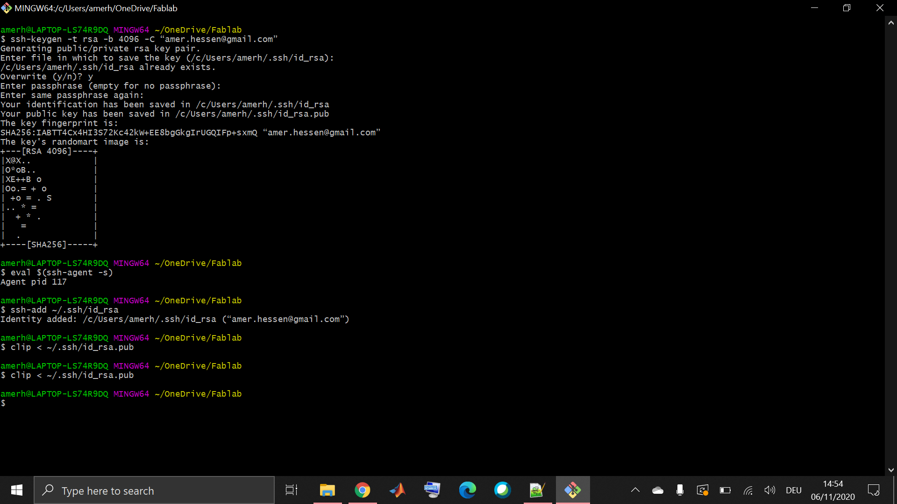
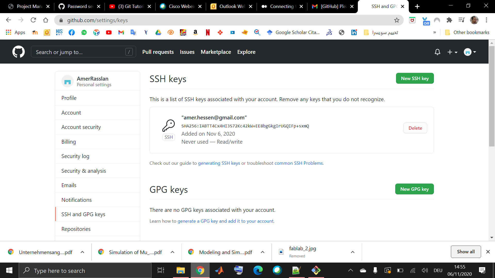
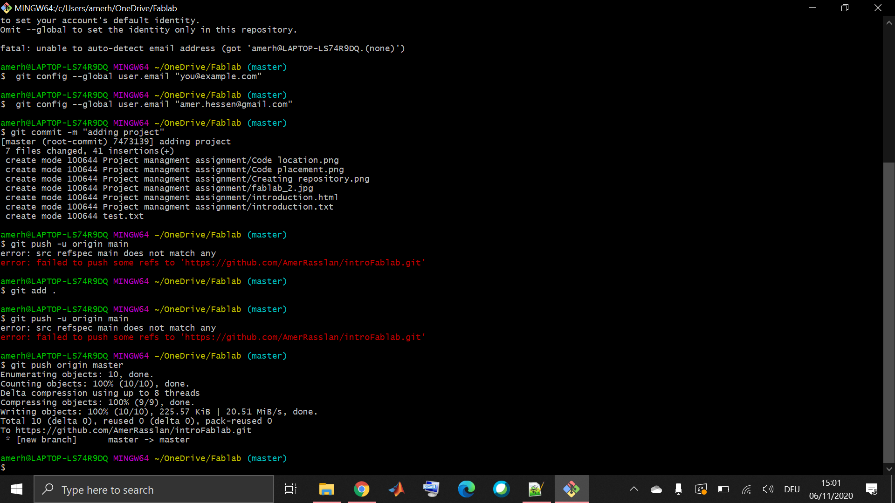
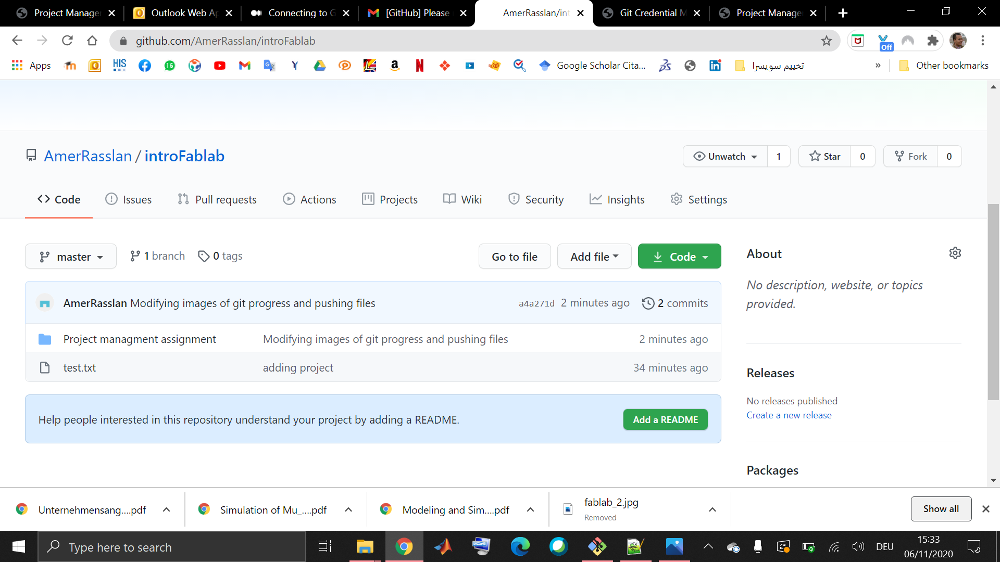
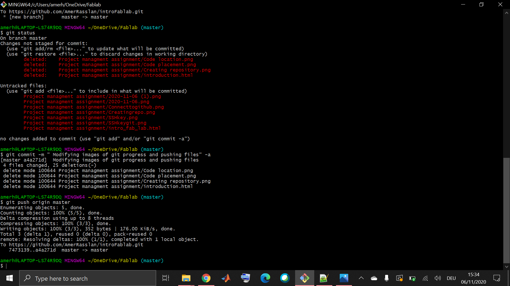

To create the Html page I used some of the popular simble html tags:
- !DOCTYPE: Defines the document type
- a : Defines a hyperlink
- body : Defines the document's body
- br : Defines a single line break
-center : Defines centered text
- h1 to h6: Defines HTML headings
- head : Contains metadata/information for the document
- html : Defines the root of an HTML document
- img : Defines an image
Here is the html source code for creating this page


In order to upload the source code of creating this html page we first need to create a new repository, So a respository named introFablab is created as follows:

Then creating a SSH key on the computer as follows:


Then connection to git hub is done as follows:

To upload the web page content on git hub, some commands are taking place in this order.
- git add, command: git add-all, Usage: This command adds all files to the staging area.
- git commit, command: git commit -m “[ Type in the commit message]”, Usage: This command records or snapshots the file permanently in the version history.
- git push, command: git push [variable name] [branch] , This command sends the branch commits to the remote repository.
Eventually the code is placed in a file called "projectManagmentAssignment.html" as follows:

